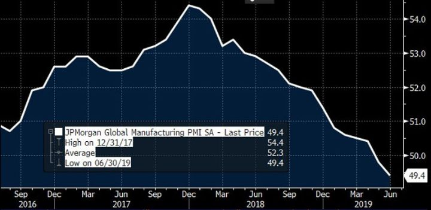
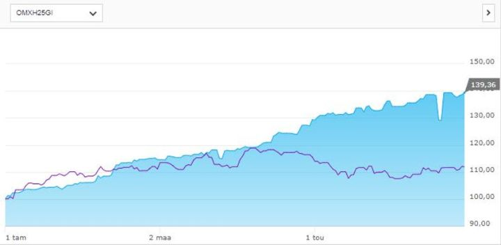
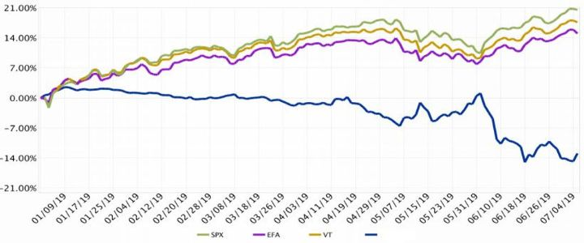
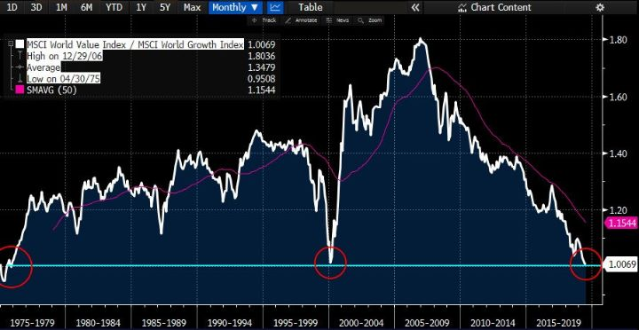
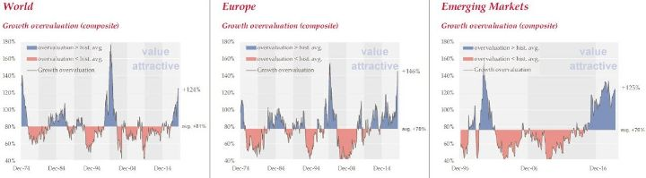

Toisen kvartaalin jälkiviisastelut
The market can stay irrational longer than you can remain solvent. - John Maynard Keynes
Elämme erikoisia aikoja
Liukuportaita ylös ja hissillä alas. Siinä perinteinen riskiassettien kehityskulku. Kuluneena ensimmäisenä vuosipuoliskona niin globaalit osakkeet kuin bonditkin, sekä monet raaka-aineet kuten öljy ovat nousseet liukuportaiden omaisesti korjaten sen hissilaskun, joka niihin viime vuoden Q4:llä saatiin.
S&P500 nousi H1:llä 17% plus osingot, nousua viime jouluaaton pohjista yhteensä 25%. Indeksi on ennätyslukemissa ja vetänyt osaltaan koko maailman osakkeita mukanaan. Euroopan indeksit eivät vielä yllä uusille ennätyslukemille.
Viimeinen näytös kauppasotanäytöksessä Yhdysvaltojen ja Kiinan välillä on vielä näkemättä, mutta tilanne on rauhoittunut. Kvartaalin puolivälin hermoiluihin tulivat myös keskuspankit ottamaan jälleen roolia markkinan tukemiseksi.
Kesäkuussa huomio siirtyikin keskuspankkeihin. Vaikka viime viikon USA:n hyvän työllisyysraportin jälkeen odotukset ovat laskeneet, odotetaan Fediltä tämän kuun lopussa käytännössä ainakin 25bps koronlaskua. EKP:kin jopa nosti QE-kortin uudelleen pöydälle.
Vielä ei olla saatu konkretiaa. Kauppasodassa on vain tulitauko ja orastavia merkkejä osapuolien leppymisestä. Edelliset tuontitullit ovat edelleen päällä. Tilanteen pitkittyessä ne jatkavat edelleen talouskasvun nakertamista. Keskuspankit ovat toistaiseksi vain sanallisesti olleet valmiita toimiin.
Ainoa mikä oikeastaan siis on muuttunut, on markkinan odotukset ja niiden myötä riskisentimentti. Eri lähteistä saatujen anekdoottien perusteella sijoittajat (me mukaan lukien, josta kohta lisää) ovat olleet varovaisesti asemoituneita. Nousu lienee ollut monille ”pain trade” ja se osaltaan on myös siivittänyt nousua.
Samaan aikaan talouden pinnan alla kasvunäkymät ovat kuitenkin hidastuneet. Globaali teollisuuden ostopäällikköindeksi on toista kuukautta alle 50 pisteen indikoiden talousnäkymien hidastumista. Alaindekseistä oli kuitenkin luettavissa, että varastotasot ovat olleet laskussa, joten Q3:lle siitä voi tulla tukea itse ostopäällikköindeksiin.
Kiinan talousluvut ovat olleet erittäin huolestuttavia valtiojohdon stimulusyrityksistä huolimatta, ja ne ovat rokottaneet kehittyvien markkinoiden näkymiä. Samoin Euroopassa kasvu- ja inflaatio-odotukset ovat painuneet entisestään.
Tulosvaroituksia on alkanut tihkumaan. Tuoreimpana tällä viikolla kansainvälinen kemikaalijätti BASF varoitti tuloksensa jäävän odotetusta pääasiassa kauppasodasta johtuvan heikomman globaalin kysynnän ja teollisen tuotannon vuoksi.

Osakkeet ovat kuitenkin vuoden huipuissaan (S&P500), joten mahdollinen vuoden jälkipuolisko elpyminen olisi jo korteissa. Korkomarkkina puolestaan heijastelee taantumaa. Reaalikorot ovat pakkasella. Molemmat markkinat kuitenkin hinnoittelevat keskuspankeilta tuhteja tukitoimia.
Tänään keskiviikkona Fedin keskuspankin Jerome Powell esiintyy Yhdysvaltain edustajainhuoneen edessä. Hänen puheistaan etsitään vihjeitä Fedin aikomuksista.
EKP:n odotetaan myös leikkaavan syyskuussa. Draghin myös odotetaan virittelevän bondi-imuriinsa isompaa suutinta. Vasta yhdeksän kuutautta sitten EKP rajoitti nettomääräiset bondiostonsa. Useat analyytikot odottavat uusista isommista ostoista ilmoitettavan syyskuun kokouksen yhteydessä.
Elämme erikoisia aikoja. Euroopan työttömyys on alimmillaan sitten kesän 2008. USA:ssa työttömyysaste on alimmillaan sitten 1970-luvun alun. Silti inflaatiota ei saada kunnolla hereille.
Kymmenen vuoden noususykli ja kurssinousu on takana. Silti keskuspankit tuntuvat säikähtävän jokaista pienintäkin raksahdusta markkinoilta. Tähän luottaen, moraalikato on vallannut sijoittajat.
Ensimmäisen vuosipuoliskon kokonaistuotto +20%
Kuten Q2:n katsauksessa ja muutenkin olemme kirjoittaneet, lähdimme tähän vuoteen varsin maltillisella riskillä. Vaikka lähtöasetelma uuden yhtiön sijoitustoiminnan ylös ajamiselle oli varsin otollinen (huomioiden edeltäneet joulukuun laskut), oli varovainen lähtö tarkoituksenmukaista.
Alkuvuosi ajoimme keskimäärin 20-25% riskipainolla. Tuota painoa laskimme entisestään Q2:lla markkinan noustessa siten, että toukokuun alkuun tultaessa se oli laskenut jo nollaan.
Siinä missä Q1 tuotto oli lähes linjassa indekseihin, alkoi huhti-toukokuun aikana osakevalinnat, indeksisuojat ja pari yksittäistä treidiä tekemään pesäeroa suhteessa indeksiin.
Ensimmäisen kerran menimme shortiksi osakemarkkinaa toukokuussa Trumpin eskaloidessa kauppasodan Kiinan kanssa. Lisäsimme nettoshorttia Meksiko-kortin tullessa pöydälle.
Suomi-osakkeet olivat olleet varsin surkeina jo jonkin aikaa, ja aloimmekin ostamaan mielestämme järkevästi hinnoiteltuja osakkeita toukokuun aikana muun maailman tullessa myöskin alas. Samoin pienensimme lähinnä S&P500-indeksishortista muodostuvaa suojaa näin jälkikäteen ajateltuna varsin onnistuneella ajoituksella – mutta aivan liian varovaisesti.
Yksittäiset osakevalinnat tuottivat riskisentimentin elpyessä touko-kesäkuussa, mutta eivät riittävästi huomioiden edelleen isohkot indeksisuojat. Samoin pari yksittäistä osake- ja bondishorttia rajoittivat kesäkuussa salkun tuottopotentiaalia.
Kokonaisuutena H1:n sijoitusten tuotto kulujen jälkeen oli tyydyttävät +20%. Samana jaksona HEX25 tuotti osinkoineen +11%, Tukholman OMX +15% (euroissa), Euroopan STOXX600-indeksi +17% ja USA:n S&P500 +18% (myös euroissa).
Ohessa kuvaaja pohjoismaisista sijoituksistamme, joita Nordnetin kautta olemme vuoden ensimmäisellä puoliskolla tehneet suhteessa HEX25-indeksiin:

Varovaisuutemme markkinaan heijastuu IB:n kautta hoitamiemme kansainvälisten sijoituksien ja etenkin indeksijohdannaisten kautta. Toki on hyvä huomata, että tarvitsimme yhteen arbitraasi-tilanteeseen suhteellisen paljon pääomaa, jonka takia Q2:lla yli 80% pääomista oli Nordnetissa ja vain alle 20% IB:ssä. Koko salkun kannalta tilanne oli koko ajan ok, vaikka IB:n kuvaaja näyttääkin varsin synkältä.

Kesäkuu ei ollut hääppöinen. Osakeindeksishorttien kevyt pienentäminen ei auttanut tarpeeksi, sillä S&P500-indeksi elpyi varsin rivakasti. Myös bondishortit kostautuivat keskuspankkien painaessaan puheillaan korkoja alas.
Kvartaalin aikana salkun kehityksessä oli siis hyvää ja huonoa. Osakemarkkinan isommissa liikkeissä olimme hyvin mukana. Käytännön toteutus kuitenkin ontui. Tämän kehittämiseen pyrimme jatkossa keskittymään. Mikä muu onnistui ja missä epäonnistuimme?
Mikä toimi?
- Kulta: Teesiä tämän treidin takana olemme avanneet aikaisemminkin, joten sitä tuskin on tässä tarve tehdä uudemman kerran. Negatiiviset korot ovat pakottaneet monia sijoittajia hakeutumaan arvon säilyttäjänä toimivaan kultaan. Teknisesti kulta näyttää edelleen erittäin hyvältä. Lisäsimme sen painoa salkussa reiluun 15%:iin kullan läpäistyä korkeimmille tasoilleen sitten 2013.
- Osakevalinnat: Aikaisemmin kuvaamamme Getinge ja Essity -longit toimivat edelleen ja olemme pitäneet niistä kiinni. Molempia olemme jälleen lähteneet keventämään. Kuten mainittua, ostimme Suomi-osakkeita toukokuun aikana. Niiden joukossa mm. Cargotec ja Metsä Board ovat tuottaneet, tosin niidenkin ympärillä olemme treidanneet. Glastonia ostimme annista.
- Erikoistilanteet: Mielenkiintoinen erikoistilanne oli, kun lomilta tultuamme heti huhtikuun alussa havaitsimme Rovion kesäkuun lopussa erääntyvää henkilöstöoptiota olevan tarjolla markkinalla diskontolla teoreettiseen arvoonsa. Muutaman kuukauden pitoajalle saatiin kulujen jälkeen mukava riskitön tuotto. Tulevia indeksimuutoksia ennakoiden myimme Atrium Ljungbergia lyhyeksi ja ostimme sitä vastaan sekä Klöverniä että Diösiä. Tämäkin harjoitus meni varsin hyvin.
- Kreikka ja Venäjä: Inhottuja ja eksoottisia. ETF-sijoitukset tuottivat +20% ja +15%. Kreikkaa myimme nyt tällä viikolla sell the fact -ajatuksella kun varmistui, että maassa vasemmistopopulistinen valta vaihtuu keskustaoikeistolaiseksi.
Mikä ei toiminut?
- Osakevalinnat: Ruotsalainen Nibe oli isoin yksittäinen suora osakeshortti. Siinä mielestämme oli hyvä teesi: Korkea valuaatio ja yhtiö oli putoamassa hyvän kurssinousunsa myötä yhdestä indeksistä. Se myös oli hetkellisesti kärsijänä USA:n asettamista tulleista Meksikolle. Teesi ei heijastunut kurssiin vaan vahva kurssimomentum jatkui. Isommalta tappiolta pelasti treidaus position ympärillä. Toinen, jossa lähdimme shortiksi momentumia vastaan oli tuore yhdysvaltalainen listautuja Beyond Meat. Siinä tarinan vetovoima on mielestämme irrottanut arvostuksen todellisuudesta. Alhainen free float ja korkeat osakelainakustannukset saivat aikaan shorttien puristuksen, jonka jalkoihin myös me jäimme. Keynesin vanha sanonta “the market can stay irrational longer than you can stay solvent” sopii tähän hyvin. Siksi panokset olivat pienet, mutta silti tappio oli suhteellisen tuntuva. Pelkästään arvostus ei saisi olla shortin peruste. Pitäisi olla selvä odotettu triggeri, joka saisi yliarvostuksen purkaantumaan. Nibessä sellainen mielestämme oli, mutta se ei vaan toiminut. Beyond Meatissa edes hintakuva ei ollut antanut vahvistusta teesille. Siinä emme pitäytyneet prosessissa ja se kostautui. Jatkossa kiinnitämme siihen entistä enemmän huomiota treidin rakentamisessa.
- Bondishortit: Siinä missä kulta hyötyi maailman hurlumhei-meiningistä ja korkojen laskusta, meidän shortit Saksan, Ranskan ja USA:n valtiolainoissa eivät siitä tykänneet.
- Pankkilongi: Aikaisemmin Q1:n jälkiviisasteluissa kuvattu pankkispredi ei myöskään toiminut. Samoin kuin bondishorteille, laskevat korot tekevät hallaa pankeille. Euroalueen pankkien arvostus (PE <8x) alkaa kuitenkin olla alimmillaan ja osinkotuotto (>6%) korkeimmillaan sitten Eurokriisin. Spredi kiikkuu lähellä position stoparitasoa ja jäämme odottamaan mitä EKP sanoo syyskuussa.
Muuta kehitettävää
Edellä kuvattujen yksittäisten kohtien lisäksi kehitettävää jää positiokoon säätämisessä. Kuten aikaisemminkin olemme maininneet, positiot eivät ole mielestämme heijastelleen riittävän tehokkaasti niiden tuottopotentiaali- ja conviction-tasoja. Yksi syy on yleinen varovaisuutemme markkinaan. Toinen on, että liikaa high conviction -keissejä ei ole oikein löytynyt. Siltikin useat hyvin toimineet yksittäiset treidit (sekä long että short) ovat olleet turhan varovaisilla painoilla, joten niistä saatu teho on jäänyt enintään tyydyttäväksi. Myös tähän tulemme panostamaan jatkossa.
Teemat tästä eteenpäin
Aina on epävarmuutta ja riskiä. Jos ei olisi, ei olisi ketään myymässä osakkeita ja kurssit olisivat äärettömän korkealla. Koemme kuitenkin, että elämme poikkeuksellisia aikoja. Esimerkiksi jotkut ovat valmiita maksamaan mm. Italialle siitä ilosta, että voivat lainata heille pariksi vuodeksi rahaa. Erikoista on myös se, että markkinat kokevat 0.65% olevan sopiva taso Euroalueen 30-vuotiselle swappikorolle. Muun muassa näistä esimerkeistä tullaan puhumaan ja ihmettelemään kymmenen vuoden päästä. Ellei sitten ennen sitä tapahdu vielä jotain paljon kummallisempaa.
Melt-up?
Entä jos keskuspankit ylittävätkin kaikkien odotukset ja tulevat ulos massiivisilla QE-ohjelmilla? Sen sijaan, että työntäisivät sitä samaa tuttua käärmettä siihen samaan vanhaan pyssyyn, he keksivätkin jonkin uuden tulokulman, joka saa inflaatio-odotukset vihdoin heräämään henkiin.
Entä jos moderni rahapolitiikka nostaa päätään entisestään ja valtiot vihdoinkin alkaisivat panostaa mm. kauan odotettuihin infraprojekteihin. Se on nähty, ettei ainakaan nykyisellä rahapolitiikalla olla onnistuttu stimuloimaan reaalitaloutta ja inflaatiota, kun samaan aikaan fiskaalipuolella on ajettu käsijarru päällä.
Korkopapereille se olisi huonompi juttu. Meidän bondishorteille, pankkilongille ja kultapositiollekin sen luulisi olevan parempi juttu. Samoin riskiasseteille yleisesti, jos sijoittajat pakotetaan ulos bondeista ja kohti tuottavampia osakemarkkinoita.
Arvosijoittaja, ja jo jonkin aikaa bearina ollut GMO:n Jeremy Grantham odotti jo vuosi sitten perinteistä bull-markkinan päättävää melt-uppia. Tulisiko sellainen nyt?
Arvo vs. kasvu
Meillä ei sitä kristallipalloa ole, joka tämän kertoisi. Pyrimme kuitenkin valmistautumaan eri vaihtoehtoihin – ennustettaviin ja ennustamattomiin. Siksi olemme valmiit missaamaan osan mahdollisesta osakerallista, jos sellainen olisi tuleva. Haluamme pitää selvästi enemmän tulivoimaa varastossa kuin mihin normaalisti olisimme valmiita.
Kuten seuraavasta kuvaajasta näkee, ovat kasvuosakkeet peitonneet arvo-osakkeet globaalisti mennen tullen sitten finanssikriisin. Niiden välinen suhde on alempana kuin teknokuplan huipulla. Myös suhteellinen arvostusero, vaikka ei vielä teknokuplan tasoilla, alkaa olla houkutteleva arvo-osakkeiden eduksi.


Siksi painotamme jatkossa arvo-osakkeita kasvuosakkeiden kustannuksella. Mutta koska mikään ei ole maailmassa mustavalkoisen joko tai, emme kuitenkaan hylkää viime vuosina voittaneita ja varsin korkealla arvostettuja kasvuosakkeita. Pyrimme roikkumaan mahdollisessa markkinan nousussa johtavien sektoreiden ja johtavien osakkeiden mukana.
Pyrimme kuitenkin fokusoimaan niihin kasvu- ja momentum-osakkeisiin, joissa arvostus on mielestämme perustellun järkevällä tasolla. Painotamme lisäksi yhtiöiden kykyä tehdä ennustettavaa kassavirtaa, puolustettavalla markkinaosuudella.
Disclaimer:
Kolumnit sisältävät mielipiteitä ja mahdollisesti tietoa omista sijoituksistamme, jotka voivat vaihdella päivästä toiseen. Mitään, mitä kirjoitamme ei tule ottaa sijoitussuosituksena. Kuten teksteissämme painotamme, päätökset kannattaa aina tehdä itse. Lukija vastaa itse voitoistaan ja tappioistaan.